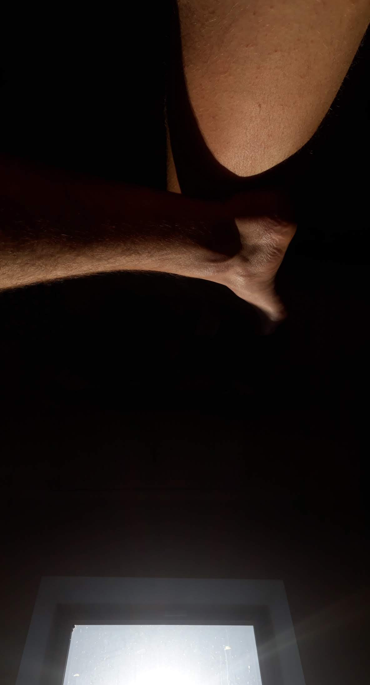

Terça-feira, quarto dia de lockdown, mantendo a tranquilidade em casa esperando o vírus. O timing com o fim do semestre foi incrível, então só as férias ganham outra cara. Família cancelou a vinda, dindo também. Provavelmente o casamento do Peter e da Young-ji (q estão providencialmente na Coreia do Sul) também vai ser cancelado, então tenho uma passagem em Maio pra Áustria para transformar em outro plano. Absolutamente todos meus planos cancelados até meio de maio; todo foco voltado em me manter saudável, arrumar um emprego e colocar a manutenção das atuais 4 bicicletas em dia. [1]
Estou até gostando. Como para todas as vagas aqui envio um CV e uma carta de motivação mais ou menos únicas, é bom ter bastante tempo disponível pra busca de emprego.
Revisando o CV, que cai na mesa do RH, olho para o que fiz no passado. Em geral é rapidinho, revisando alguma tradução ou destacando alguma habilidade específica que possa ser uma palavra-chave da vaga em questão, mas sem sair muito do padrão esperado. A única parte do CV que realmente toma alguma atenção toda vez que reviso é a lacuna que paradoxalmente contem os 12 meses passados. [2] E se o CV fala sobre o passado, na carta de motivação preciso refletir sobre o que espero do futuro. Com uma só página e meia dúzia de frases disponíveis, e em uma língua diferente, acabo levando um pouco mais de tempo nessa etapa, explorando a cada vaga um possível caminho pra vida.

[1] Também tenho descoberto muita música nova.
[2] Será q é uma boa frase pra colocar na carta de motivação, explicando a parte que o CV não consegue expressar? Vai levar meia hora pra eu achar a tradução certa, pqp.